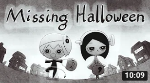
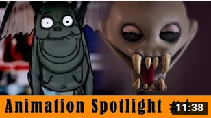
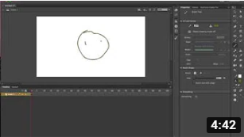
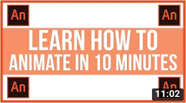
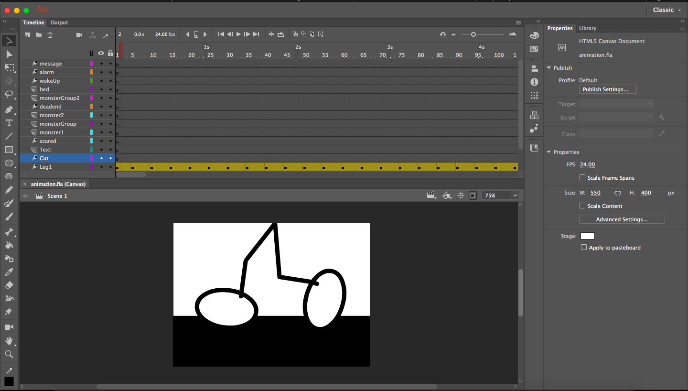
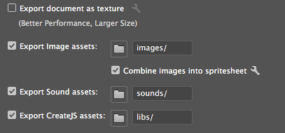

My initial idea was to base my animation plot on Halloween, since it is coming. But I didn't really know what kind of story I wanted to tell.
Then I thought, maybe I could base it off a song then somehow merge some kind of Halloween vibes to it. My friend suggested to look into an artist called Tyler, The Creator.
I liked a couple of songs but the one that stuck out that would be good for this project was a song called "Find Your Wings".
|
 |
|
 |
|
 |
|
 |
The lyrics of the song is an essential part of my planning because my plot is based on the lyrics and interpretation of the song itself.
So based on the lyrics, I made a shotlist. I made each frame simple and easy enough where I think I could easily animate it.
My main inspiration for my animation style itself is the Missing Halloween video above, although mine doesn't have as much going on.
For this project, I used the Adobe Animate software. Not only was it my first time to use this software, but it's also my first time to create any kind of animation.
It was a challenge for me to actually start using this software as I did not know how to start. I asked helped from friends who I thought would have enough knowledge to teach me.
But I ended up watching YouTube videos to help me get through which are stated above. I had to learn the concepts of tweening and frames before I could actually start my project.
For my animation aesthetics, I initially only wanted a black and white theme. But as I was creating my animation, I thought it wuld just be a good idea to have the monsters have red eyes and mouth.
Just so that the monsters can easily be identified. Also, having a pop of colour would make my animation look less boring. For the framing and shots, I wanted to focus on the main character being scared.
To do this, I had a couple of close up shots and fast cuts to emphasize that the main character is trying to move fast, away from wherever it is he's running from.
Since I'm lacking on my animation skills, I couldn't execute some shots that I wanted to do from my shotlist. An example is when the main character heard voices and he was going to turn around.
I was not sure how I would turn his head back so I thought it would be better if I just moved his pupils to the right. This was a good alternative shot because it almost had the same effect as the head turn.
It's like, the character wants to look at who said it, but does he really want to find out?
As I mentioned above, I had based my animation on a song by Tyler, The Creator. I would've liked to have his song playing in the background but I couldn't because of copyright issues.
Other than that source, everything I had made in this animation is my creation.
The software I used was Adobe Animate CC for creating this animation. I was told that this was the replacement for Adobe Flash which is what most animators use for creating their work.
Another reason I used this software is because I have never used it before and I wanted to learn the industry standard in terms of creating animations.
I definitely needed to use tools such as the rectangular tool, free transform tool, selection tool, etc to create an animation from scratch.
One of the most helpful tools within this software is the stage because this is where you will see your animation. But in my opinion, the most important part of this software is the timeline.
In the timeline, you'll have your layers, frames, keyframes, etc. This is how you make your animation move that's why I think it's very important.
Although I had a hard time creating an animation, the interface was easy to follow as it's pretty much the same as Photoshop and Premiere Pro.
The only struggle I had was making the elements move smoothly which I eventually learned how to do from Youtube videos.
Before exporting my work, I searched up some essential criterias on how to export an html5 canvas. I made sure it's responsive.
I had a problem one time where I was in the middle of editing my animation and I wanted to view it on the browser but it had been stuck to 80% while loading.
I was googling solutions and I found out I had to untick the "Export document as texture" option and tick "Export Image assets" instead for it work.
By exporting image assets, it combines all my images into a spritesheet which probably makes it easier for Animate to process.
I managed my animation assets the same as I did as my previous projects.